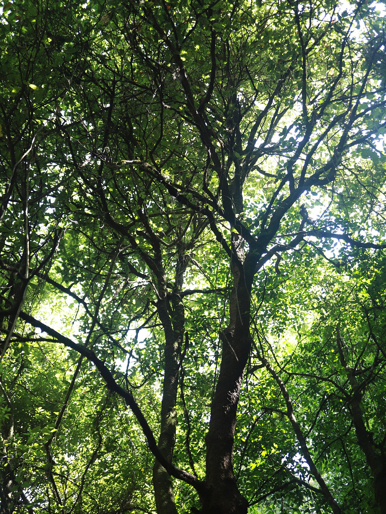

Establishing Protected Lands
In 1905, Roosevelt established the U. S. Forest Service, with Gifford Pinchot as its first Chief Forester. Pinchot’s excellent eye for habitat contributed to the designation of many new valuable forests and wilderness areas.
He and Roosevelt established or expanded 150 national forests; created 51 federal bird (wildlife) refuges; four national game preserves; six national parks; 18 national monuments.
150 national forests · 51 bird refuges · 4 game preserves · 6 parks · 18 monuments
